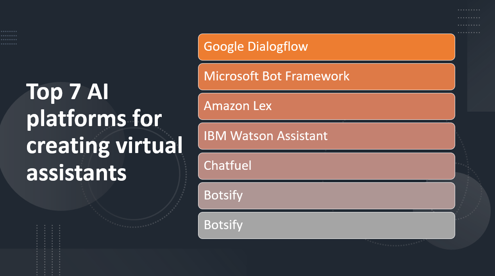

Introduction
Virtual assistants have become an integral part of our daily lives, providing personalized assistance and improving productivity. Artificial Intelligence (AI) platforms offer comprehensive solutions for developing and deploying virtual assistants with advanced natural language processing and machine learning capabilities. In this blog post, we will explore the top seven AI platforms for creating virtual assistants, empowering businesses to enhance customer experiences and streamline user interactions.
- AI platforms enable virtual assistants to understand and respond to user queries naturally.
- Virtual assistants powered by AI can provide personalized and contextually relevant responses.
- AI platforms automate tasks, handle inquiries, and improve operational efficiency.
- AI platforms can handle large volumes of interactions, making them suitable for serving a large user base.
- AI-powered virtual assistants continuously learn and improve from user interactions.
Here Are Our Top 7 AI platforms for creating virtual assistants:
1: Google Dialogflow
Overview and Importance
Google Dialogflow is a powerful AI platform that enables developers to create conversational agents, commonly known as chatbots or virtual assistants. It offers natural language understanding and conversation management capabilities, allowing businesses to automate customer interactions and provide personalized experiences.
Learn more about Google Dialogflow
Key Features and Capabilities
Intent Recognition
- Dialogflow uses machine learning algorithms to accurately understand the intent behind user inputs, enabling appropriate responses and actions.
- Dialogflow can extract important information or entities from user messages, allowing for personalized and contextually relevant interactions.
Context Management
- Dialogflow can maintain context during a conversation, remembering previous user inputs to facilitate more natural and coherent dialogues.
2: Amazon Lex
Overview and Importance
Amazon Lex is an AI service provided by Amazon Web Services (AWS) that enables developers to build conversational interfaces, such as chatbots and virtual assistants. It utilizes advanced natural language understanding capabilities to facilitate interactive and engaging conversations with users.
Learn more about Amazon Lex
Key Features and Capabilities
Automatic Speech Recognition (ASR)
- Amazon Lex converts spoken language into text for voice-based interactions.
Natural Language Understanding (NLU)
- Amazon Lex uses machine learning to understand the meaning and intent behind user inputs.
Dialog Management
- Amazon Lex manages dynamic conversations, prompting for information and guiding users through tasks.
Entity Recognition
- Amazon Lex identifies and extracts important entities from user inputs for accurate processing of specific information.
3: Microsoft Bot Framework
Overview and Importance
Microsoft Bot Framework is a comprehensive platform for building and deploying chatbots and virtual assistants. It provides developers with a range of tools and resources to create intelligent and conversational agents that can interact with users across multiple channels, such as websites, messaging platforms, and voice-enabled devices. The Bot Framework offers a robust and scalable solution for businesses to enhance customer interactions, automate tasks, and provide personalized experiences.
Learn more about Microsoft Bot Framework
Key Features and Capabilities
Bot Builder SDK
- The Bot Framework offers a powerful SDK for building bots using multiple programming languages.
Natural Language Processing (NLP)
- The framework leverages NLP capabilities for accurate understanding of user inputs and context-aware conversations.
Multi-channel Support
- Bots built with the Bot Framework can be deployed across various channels, ensuring a seamless user experience.
4: IBM Watson Assistant
Overview and Importance
IBM Watson Assistant is an AI-powered platform that enables businesses to build and deploy conversational agents and virtual assistants. It leverages natural language processing and machine learning techniques to understand user inputs, provide relevant responses, and guide users through conversations. Watson Assistant is designed to enhance customer interactions, automate tasks, and deliver personalized experiences across various channels.
Learn more about IBM Watson Assistant
Key Features and Capabilities
Dialog Flow Builder
- IBM Watson Assistant offers a visual builder for creating conversational flows with a drag-and-drop interface.
Natural Language Understanding (NLU)
- Watson Assistant utilizes advanced NLU capabilities for accurate understanding of user intents and context.
Integration with IBM Watson Services
- The platform seamlessly integrates with other Watson services to enhance virtual assistant capabilities.
5: Rasa
Overview and Importance
Rasa is an open-source conversational AI framework that enables developers to build and deploy AI-powered chatbots and virtual assistants. It offers a flexible and customizable platform for creating interactive and context-aware conversational experiences.
Learn more about Rasa
Key Features and Capabilities
Natural Language Understanding (NLU)
- Rasa provides robust NLU capabilities for understanding user intents and extracting entities from user inputs.
Dialogue Management
- The framework allows developers to define and manage complex dialogues, incorporating context and maintaining conversational flow.
Open-Source and Customizable
- Rasa is an open-source framework, providing developers with the flexibility to customize and extend its capabilities to meet specific project requirements.
6: Chatfuel
Overview and Importance
Chatfuel is a popular chatbot development platform that allows users to build AI-powered chatbots for various messaging platforms, such as Facebook Messenger. It provides a user-friendly interface and does not require coding skills, making it accessible to a wide range of users.
Learn more about Chatfuel
Key Features and Capabilities
Visual Chatbot Builder
- Chatfuel offers a drag-and-drop interface for designing and customizing chatbot flows, making it easy to create conversational experiences.
AI and Natural Language Processing (NLP)
- The platform incorporates AI and NLP capabilities to understand user inputs, handle FAQs, and provide intelligent responses.
Integration and Multichannel Support
- Chatfuel integrates with popular messaging platforms, including Facebook Messenger, Telegram, and Slack, allowing businesses to reach their audience on multiple channels.
7: Botsify
Overview and Importance
Botsify is an AI chatbot platform that enables businesses to build and deploy conversational chatbots for websites, Facebook Messenger, and other messaging platforms. It helps automate customer interactions, improve user engagement, and enhance customer support.
Learn more about Botsify
Key Features and Capabilities
Chatbot Builder
- Botsify provides a user-friendly interface and a visual chatbot builder, allowing users to design conversational flows and customize chatbot behavior without coding.
Natural Language Understanding (NLU)
- The platform incorporates NLU capabilities to understand user intents, extract entities, and provide accurate and context-aware responses.
Integration and Multichannel Support
- Botsify integrates with various platforms, including websites, Facebook Messenger, and WordPress, enabling businesses to reach their customers on multiple channels and provide seamless experiences.
Conclusion
AI platforms are significant for creating virtual assistants as they provide the necessary tools and capabilities for developing advanced conversational agents.
Recap of the top seven AI platforms for creating virtual assistants:
- Google Dialogflow: Powerful natural language understanding, multi-platform and multi-language support.
- Amazon Lex: Automatic speech recognition and text-to-speech, seamless integration with other Amazon Web Services.
- Microsoft Bot Framework: Comprehensive development framework, enables building intelligent bots across various channels.
- IBM Watson Assistant: AI and machine learning-based, supports complex dialog flows and external system integration.
- Rasa: Open-source platform with customization options, powerful dialogue management, supports text and voice interactions.
- Chatfuel: User-friendly interface for chat-based virtual assistants on Facebook Messenger, no coding required.
- Botsify: Drag-and-drop interface, supports multiple messaging platforms, features user segmentation and live chat integration.
Virtual assistants have a positive impact on:
- Customer engagement: Real-time interaction, instant support, and personalized recommendations.
- Automation: Automating repetitive tasks, freeing up human resources for complex activities.
- Personalized experiences: Collecting user data to deliver tailored experiences and targeted marketing.
Businesses are encouraged to explore these AI platforms and choose the one that best aligns with their virtual assistant requirements. This will enhance user interactions, improve customer satisfaction, and drive business growth through efficient and effective customer service.